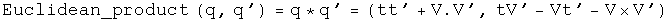

A Quaternion Algebra Tool Set
Here is a compilation of basic algebra for quaternions. It should look very similar to complex algebra, since it contains three sets of complex numbers, t + x i, t + y j, and t + z k. To strengthen the link, and keep things looking simpler, all quaternions have been written as a pair of a scalar t and a 3-vector V, as in (t, V). All these relations have been tested in a C library and a Java quaternion calculator.
Technical note: it is vital that every tool in this set can be expressed as working with a whole quaternion q. This will make doing quaternion analysis with automorphic functions fruitful.
Parts


Simple algebra


Multiplication
The Grassman product as defined here uses the same rule Hamilton developed. The Euclidean product takes the conjugate of the first of the two elements (following a tradition from quantum mechanics).





Trigonometry


Note: since the unit vectors of sine and cosine are the same, these two commute so the order is irrelevant.


Powers

Logs

Quaternion exponential multiplication

Andrew Millard suggested the result for the Grassman product.